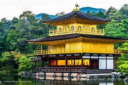
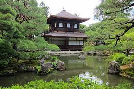
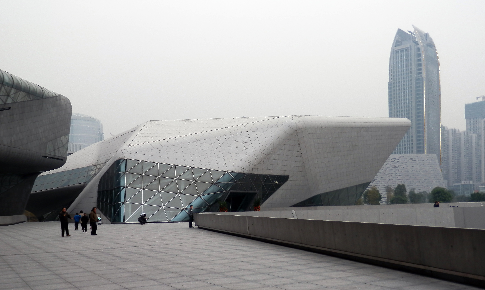

Mont Fuji
Le mont Fuji est une montagne du centre du Japon qui se trouve sur la côte sud
de l'île de Honshū, au sud-ouest de l'agglomération de Tokyo.
Kinkaku-Ji
>Le Kinkaku-ji (litt. « temple du Pavillon d'or ») est le nom usuel du Rokuon-ji
(litt. « temple impérial du jardin des cerfs ») situé à Kyōto au Japon.
Ginkaku-Ji
>Le Ginkaku-ji (le « temple du Pavillon d'argent ») est un temple bouddhiste situé dans l'arrondissement Sakyō-ku à Kyōto au Japon.
Opéra House
>
L'Opéra de Guangzhou est un opéra chinois situé à Guangzhou,
dans la province du Guangdong.
Muraille de Chine
 >
>
La Grande Muraille, aussi appelé « Les Grandes Murailles » est un ensemble de
fortifications militaires chinoises construites, détruites et reconstruites en plusieurs
fois et à plusieurs endroits entre le iiie siècle av. J.-C. et le xviie siècle pour marquer et
défendre la frontière nord de la Chine. C'est la structure architecturale la plus importante jamais
construite par l’être humain à la fois en longueur, en surface et en masse.